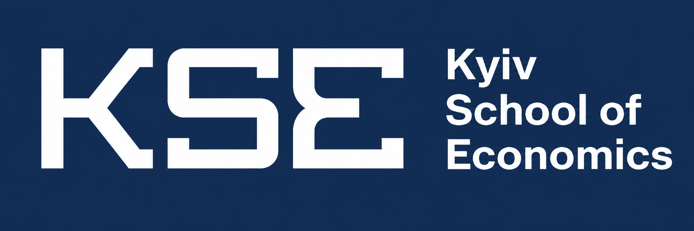

Лекція
Практика (Тести)
Симулятор CISO
You Will Be The CISO
Модулі курсу:
Модуль 1. Security Governance
Модуль 2. СУІБ та ISO/IEC 27001
Прогрес практики модуля:
0 / 5
Зрілість (Maturity)
65%
Довіра бізнесу
75%
Бюджет CISO
$100,000
Рівень ризику
Високий
Практика 1
Перевірка знань: Security Governance
Скинути відповіді